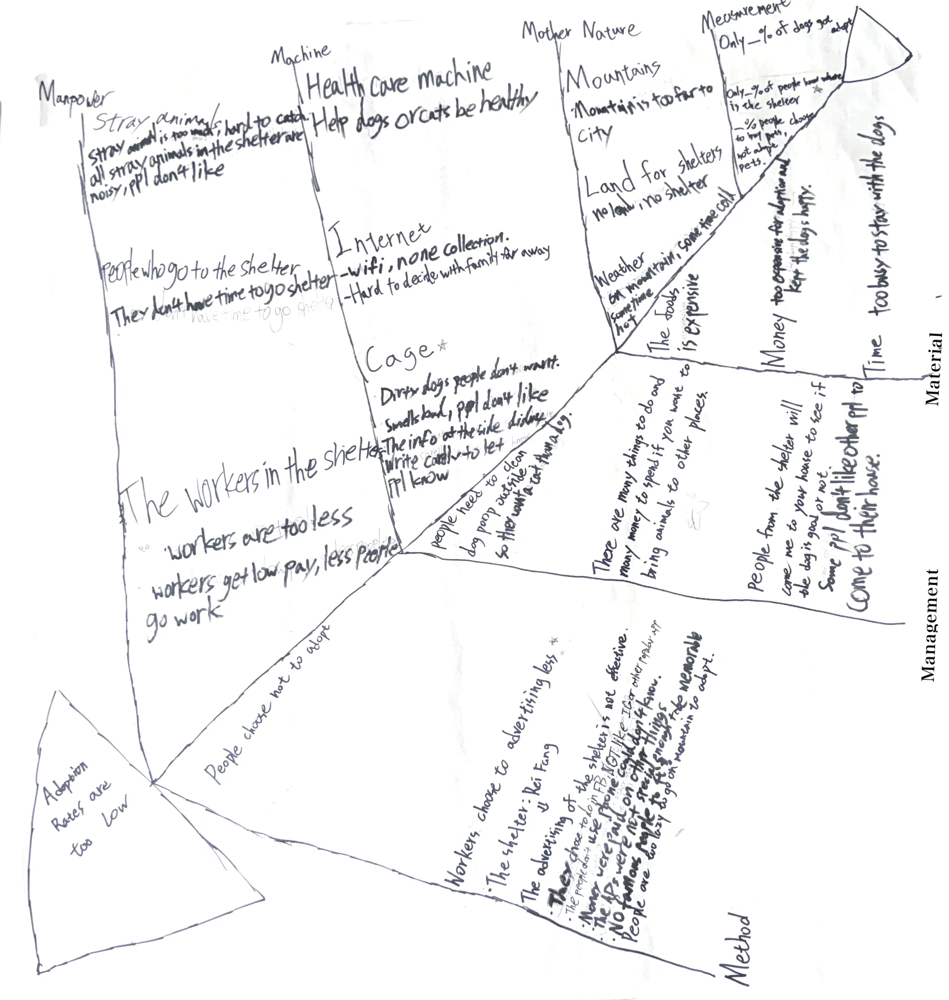

Will Chu
Will Chu
Will's Research_page
Learning to do research
we learned how to do research this semester
In this semester, we learned how to do research and conduct surveys. We have many lessons about the survey research and how to help dogs to get adopt. We also learned the good way to ask people for helping to do the survey.
Practice with Da'an people
More group work details
Fishbone

We made our research topic into a big fishbone note, it have a lot of notes from us. These notes are all collect with the main topic and we even expanded further.
5 WHY
In the fish bone, we chose an idea that we can work on: The advertisement were not effective.
After that, we find 5 whys to think about.
5 whys were5 whys are: they chose to do in not popular app
The people who dont use phone won’t know
Money were all spent on other place
The ads were not memorable
No famous people to endorsement
Survey Design
Our early version is the high quality version that we are using now.
So I will show the survey that we made
For question 在過去兩年內，您是否記得曾看過有關動物收容所的廣告？ (請依您的記憶選擇「是」或「否」，不確定時請選擇最接近的答案。) ☐ 是 ☐ 否
For question 如果請您描述該廣告，您是否能夠向他人說明內容？ (請根據您對該廣告的印象，判斷自己是否能清楚轉述內容。) ☐ 是 ☐ 否
請簡要描述廣告中讓您印象最深刻的一個元素: (請用一到兩句話描述讓您印象最深的部分，例如畫面、故事、音樂或某個細節。如果沒有，請填"否")
當您看到動物收容所的廣告時，您認為應該最強調哪些資訊？（可複選）
(可勾選一個或多個您認為重要的選項；若有其他想法，請填寫在「其他」。)
☐ A. 狗狗的資訊（例如：品種、年齡、個性等）
☐ B. 收容所的位置
☐ C. 廣告的製作品質（畫面、剪輯等）
☐ D. 聯絡方式
☐ E. 音樂
☐ F. 與當前熱門話題的連結
☐ G. 參與或領養的好處
☐ H. 代言人或推薦者
☐ I. 其他：________________________
Group Introducing Video
May 18